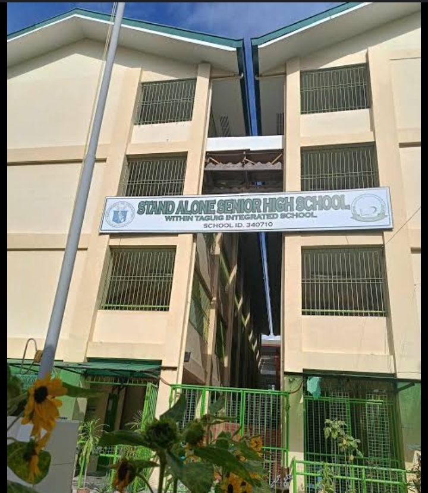

STAND ALONE SENIOR HIGH SCHOOL - TIS
home
acvities
gallery
Contacts

DESCRIPTION:A stand-alone Senior High School (SHS) is a secondary school that operates independently from a Junior High School (JHS) or Integrated School (IS). It has its own distinct location and a separate school head (principal). This contrasts with Integrated SHS, which is located within an existing JHS or IS and shares the same school.
NAME: JACE DS. NAVAROO
GRADE & SECTION: 11 - ECONOMY